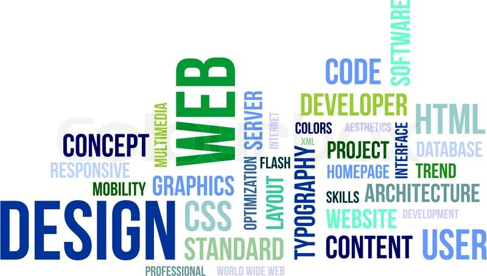

Hi all, i am Vikas Kumar. A constant learner and always looking for opportunities to grow.
I am a masters in computer application and currently a working professional with one of the IT multi-nationals in India.
My hobbies are to watch and play cricket and listen to music to burst out stress. I always try to indulge myself in the activities that are productive and creative.
Being from a computer science background. I have always been interested in learning new technologies and techniques which helps to make the world a better place. I have knowledge of programming languages like java and C++.
My current aspiration is to become a full stack web developer and learn all the necessary frameworks required.
As per the industry norms, i would like to concentrate more on Angular js, Node js and AWS cloud frameworks.
I have been working as Webmethods developer in a multinatinal IT comapany from the past four years. It's a middleware tool based on Java which integrates different environments.
Now, i have decided to switch gears in my career and become full fledged web developer.
In the workspace of web development. This is the first website i am creating which defines my portfolio as web developer.
